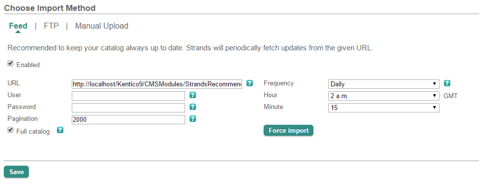
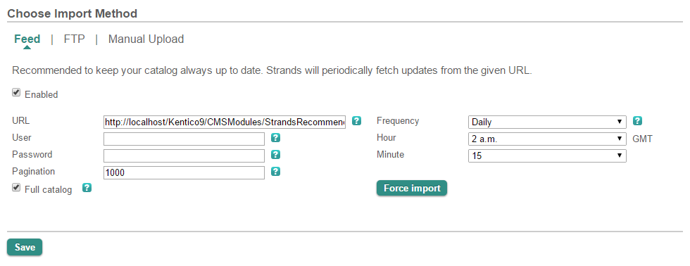

Troubleshooting the Strands Recommender integration
This topic describes how you can resolve some of the situations that you may come across when using the Strands Recommender.
Unable to insert Strands recommendations into emails
When inserting a strands recommendation widget into emails, you can receive an Access Denied error. You need a Kentico EMS license to insert Strands recommendation widgets into emails, as the functionality makes use of contact management.
Please make sure you contact Strands support if you need a Strands Recommender feature turned on.
The Strands catalog feed is not uploaded to Strands
You can see, for example in catalog upload history, that the Strands catalog feed is not uploaded to Strands. If that is the case, make sure you:
Update the Strands catalog feed upload settings. The Save button in Kentico's Settings (application) -> Integration -> Strands Recommender immediately starts a Strands catalog feed upload to Strands. The button also transfers the upload settings to Strands.
You have to update the Strands catalog feed upload settings, for example, if your site moved to a different address. By updating the settings, Strands will know at what address it should now request the catalog.
Try setting up the import manually:
Open the Strands Catalog format page.
Navigate to the Import Method page.
Select Feed in the Choose Import Method section.
Enter the URL of the feed. The feed is generated in <site address>/CMSModules/StrandsRecommender/CMSPages/StrandsCatalogFeed.ashx.
Specify the Pagination – the number of products that each page that is being uploaded to Strands contains. The default value is 2000.
Select the Enabled and Full catalog check boxes.
Save your catalog.

Changing Strands catalog upload settings
Upload the catalog manually:
Download the feed generated in <site address>/CMSModules/StrandsRecommender/CMSPages/StrandsCatalogFeed.ashx as an .xml file.
Open the Strands Catalog format page.
Navigate to the Import Method page.
Select FTP (for catalog files larger than 5MB) or Manual Upload in the Choose Import Method section.
Follow the instructions on the screen to finish the upload.
System slowdown during Strands catalog feed upload
If you experience a noticeable system slowdown when the Strands catalog feed is being uploaded, you may want to change how the catalog is being split into pages (Pagination). By default, the Pagination is set to 2000 products per page. To change the pagination value, you need to set the catalog import method on the Strands Import Method page.
To change the Strands catalog Pagination:
Open the Strands Catalog format page.
Navigate to the Import Method page.
Select Feed in the Choose Import Method section.
Enter the URL of the feed. The feed is generated in <site address>/CMSModules/StrandsRecommender/CMSPages/StrandsCatalogFeed.ashx.
Specify the Pagination – the number of products that each page that is being uploaded to Strands contains. The default value is 2000.
Select the Enabled and Full catalog check boxes.
Save your catalog.

Changing the Strands catalog paginationTry to use different Pagination values to find the value at which your system performs best.
General Strands Recommender troubleshooting
With issues related to configuring individual Strands Recommender functionality and settings, please make sure you contact Strands support.